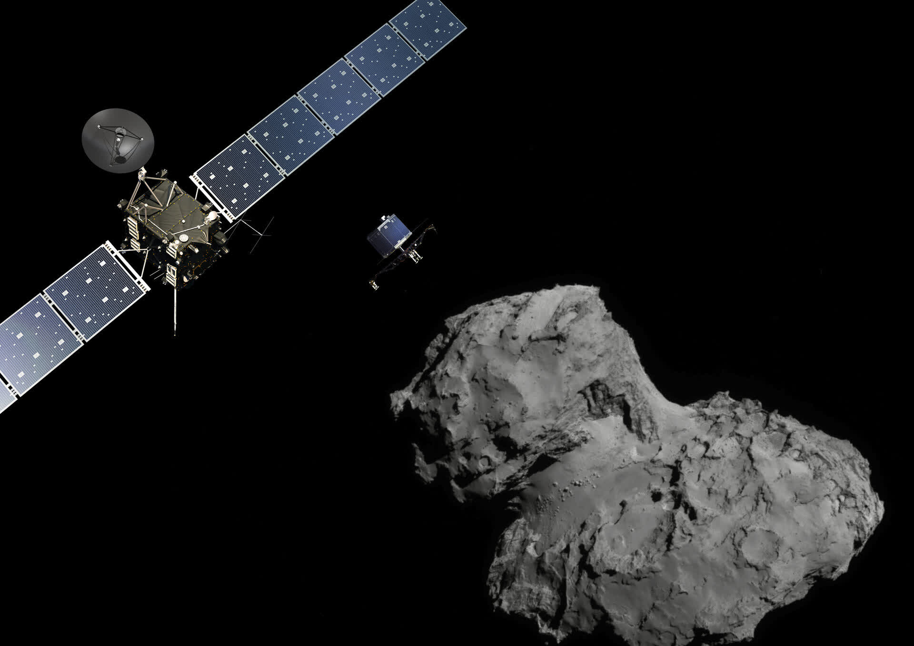

Космические исследования
Космические исследования открывают человечеству новые горизонты. Узнайте о великих миссиях, зондовых аппаратах и достижениях в освоении Вселенной.
Знаковые космические миссии
Apollo 11
Первая высадка человека на Луну (1969).
Voyager 1
Самый дальний зонд, покинувший Солнечную систему.
Hubble
Космический телескоп, изменивший астрономию.

Rosetta
Первая посадка зонда на комету (2014).
Интересные факты о космических исследованиях
- Международная космическая станция — крупнейший объект, построенный человеком на орбите.
- Зонд Voyager 1 находится дальше всех искусственных объектов от Земли.
- Телескоп Hubble сделал более 1,5 миллиона наблюдений.
- Миссия Apollo 11 доставила на Луну 382 кг лунного грунта.
Что такое космические исследования?
Космические исследования — это изучение космоса с помощью автоматических и пилотируемых аппаратов, телескопов и зондов. Они позволяют узнать о происхождении и эволюции Вселенной, строении планет, звёзд, галактик, а также искать внеземную жизнь и разрабатывать новые технологии для человечества.
Основные этапы освоения космоса
- 1957 — запуск Спутника-1, первый искусственный спутник Земли.
- 1961 — первый полёт человека в космос (Юрий Гагарин).
- 1969 — высадка человека на Луну (Apollo 11).
- 1971 — первая орбитальная станция (Салют-1).
- 1977 — запуск зондов Voyager 1 и 2, исследование внешних планет и выход за пределы Солнечной системы.
- 1990 — запуск телескопа Hubble, революция в астрономии.
- 2000 — начало постоянного присутствия человека на МКС.
- 2014 — посадка зонда Philae (Rosetta) на комету.
- 2021 — запуск телескопа James Webb, новые горизонты наблюдений.
Космические аппараты и их вклад
- Зонды Voyager — исследовали Юпитер, Сатурн, Уран, Нептун, продолжают работу в межзвёздном пространстве.
- Curiosity и Perseverance — марсоходы, изучающие поверхность и атмосферу Марса, ищут следы жизни.
- Hubble и James Webb — космические телескопы, открыли тысячи галактик, экзопланет, уточнили возраст Вселенной.
- Rosetta — первая миссия по посадке на комету, изучение состава и структуры ядра.
- New Horizons — первый зонд, исследовавший Плутон и пояс Койпера.
- Луноходы и автоматические станции — доставили образцы лунного и марсианского грунта на Землю.
Влияние космических исследований на науку и жизнь
- Развитие спутниковой связи, навигации, метеорологии и мониторинга климата.
- Создание новых материалов, медицинских и компьютерных технологий.
- Понимание процессов образования планет, звёзд и галактик.
- Поиск потенциально обитаемых миров и внеземной жизни.
- Международное сотрудничество и объединение усилий учёных разных стран.
Современные и будущие миссии
- Artemis — возвращение человека на Луну и создание лунной базы.
- Mars Sample Return — доставка образцов марсианского грунта на Землю.
- JUICE — исследование ледяных спутников Юпитера (Европа, Ганимед, Каллисто).
- LUVOIR, Roman, PLATO — новые космические телескопы для поиска экзопланет и изучения Вселенной.
- Разработка технологий для пилотируемых полётов к Марсу и дальнему космосу.